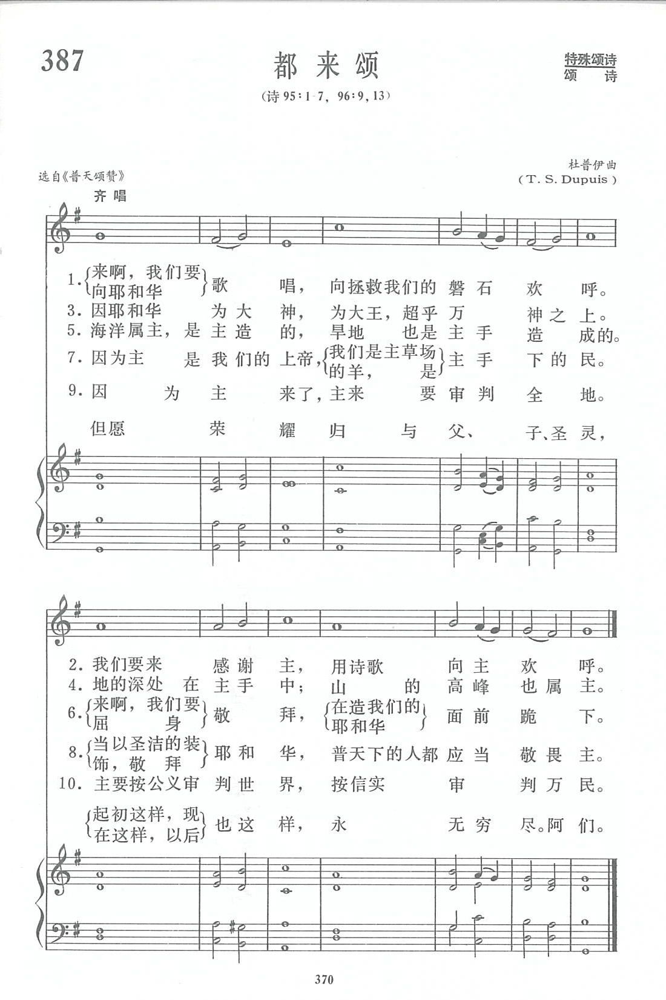

|
|
|
|
1 O come, let us sing unto the Lord: |
第387首《都來頌》 |
|
https://www.zanmeishige.com/tab/14060.html?songbook=1&index=387
 [Chant] (Dupuis 17164)
|
|
|
|
|
.jpg)

https://youtu.be/yNCdlYwPCFw
| Text: | Canticle of Praise to God (Venite Exultemus) |
| Tune: | [O come let us sing unto the Lord] |
Tune Information
| Title: | [Chant] (Dupuis 17164) |
| Composer: | Thomas Sanders Dupuis |
| Incipit: | 17164 32171 22234 |
| Key: | G Major |
| Copyright: | Public Domain |
| Short Name: | Thomas Dupuis |
| Full Name: | Dupuis, Thomas Sanders, 1733-1796 |
| Birth Year: | 1733 |
| Death Year: | 1796 |
第387首 都来颂 VENITE，EXULTEMUS DOMINO _Anglican chant
经文：“来啊，我们要向耶和华歌唱，向拯救我们的磐石欢呼”(诗95：1)。
这首《都来颂》和第388首《尊主颂》都是从《普天颂赞》里选来的圣咏(Chant)。
按宗教改革以后，英国圣公会(国教，也称为安立甘会)在编译《公祷书》时，除简化、净化原有旧教的仪式礼文外，还创造了一种唱颂散文诗篇的方法，通称为安立甘式颂调(Anglican chant)，沿用至今，不但圣公会各堂通用，其他新教教派也有采用的。我国长老会于1914年重订《赞神圣诗》时，也保留了七首这样的颂调，该书称之为“咏”。
安立甘式颂调①，又称为“咏”，每句大都分为前后两部分，每部分多为7小节，
唱的时候每节又分为两小段：
每节开头的一小段，称为吟诵或宣叙之段(Recitation)；
每部分后面的一小段，称为变化之段，(Inflection)。
吟诵之段并无高低上的变化；到了变化之段，音调才开始有高低变化、强弱的节奏。吟诵时一个音符可容纳几个字或十几个字的词，力求合诗词的句读，遇逗点(，)或分号(；)时可以略停换气。
变化之段开始后，唱时便依乐谱的分节，合一定的节奏。总之这种唱法可以唱各种散文词句，如全部诗篇及其它经文段落，文字是主题，音乐是文字的装饰。
《都来颂》的名称乃从“你们都来”或“来啊，我们要向耶和华歌唱”(诗篇9 5：1)，外国沿用拉丁文首字Venite或首句Venite；Exultemus Domino作为歌名。
按圣公会公祷书规定此颂在早祷时用。词句选自诗篇第95篇1至7节；第96篇第9节、13节。
曲谱作者杜普伊(T．S.Dupuis，1733—1796)是法裔英国作曲家、管风琴家，曾任英国皇家教堂管风琴师，写过许多供教会礼仪唱颂的音乐。死后葬于伦敦威斯敏斯特大教堂。
①安立甘宗是各国基督教圣公会的统称。安立甘(AngliCan)原意为英格兰的。圣公会原为英格兰国教，其他各国的圣公会都不是国教，也不从属于英格兰的国教教会，却沿用“圣公会”或安立甘宗这个名称。安立甘颂调(Anglican Chant)指圣公会礼拜时唱诗篇或其它散文颂歌所用的曲调。
By Joshua Steele|November 15th, 2017|
The Venite is a canticle used in Morning Prayer, based largely upon the text of
Psalm 95. It is featured in certain editions of the Rookie Anglican Daily Office
Booklet.
Below is an audio file of the easiest way, in my opinion, to chant the canticle.
Audio Player
00:00
01:50
javascript:void(0);
Use Up/Down Arrow keys to increase or decrease volume.
As you can see in the pagescan from the 1940 Episcopal Hymnal below, I’m
chanting #609, the setting written by R. Goodson.
Venite page scan from the 1940 Episcopal Hymnal.

https://anglicancompass.com/venite/
Anglican Chant comprises ten chords (for a single chant) – a reciting chord followed by a cadence of three chords, and a second reciting chord followed by a final cadence of five chords. The first part of the psalm verse is sung to the first half of the chant. The second reciting chord and final cadence have the remainder of the psalm verse following the asterisk. For a double chant there are twenty chords and use two psalm verses for the chant. When teaching Anglican Chant it is helpful to teach the music first using nonsense syllables, numbers, or silly sentences.
Pentecost Sequence in English Veni Sancte Spiritus Stephen Langton